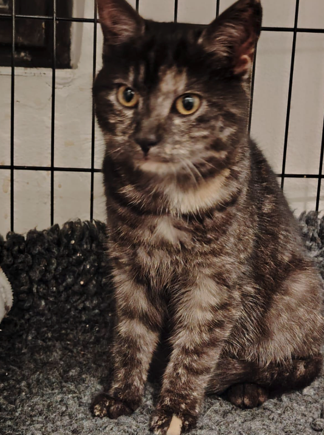

Bětuška
Bětuška byla nalezena v prosinci 2025 na samotě u obce Vápno, kde byla s největší pravděpodobností úmyslně vysazena a několik dní pobývala venku v mrazivém počasí. Díky všímavému nálezci se dostala do bezpečí a následně do naší péče.
Jedná se o odrostlé kotě v dobrém zdravotním stavu.
V současné době je v karanténě, čekají ji testy, popř. kastrace.
Bětuška je velmi hodná, přítulná a mazlivá kočička, vyhledává lidskou společnost a kontakt.
Domov hledá výhradně v bytových podmínkách.
Jedná se o odrostlé kotě v dobrém zdravotním stavu.
V současné době je v karanténě, čekají ji testy, popř. kastrace.
Bětuška je velmi hodná, přítulná a mazlivá kočička, vyhledává lidskou společnost a kontakt.
Domov hledá výhradně v bytových podmínkách.

Informace o zvířeti

Evidenční číslo:
1240

Datum narození:
1.12.2024

Věková kategorie:
Dospělý

Pohlaví:
kocour

Rasa:
evropská

Zbarvení:
černá

Opatrovník:
Libuška (Plzeň)

Datum nálezu:
22.11.2025

Původ příjmu:
Darovací smlouva od původního majitele
Vhodný do domácnosti s přístupem ven?
Vhodný k dalším kočkám?
Vhodný k psům?
Vhodný k dětem?
Vhodný k odrostlejším dětem?
Test na panleukopenii:
Test na FeLV:
Test na FIV:
Kastrovaný:
První vakcinace:
Druhá vakcinace:
Galerie

Podpořte nás
Naplňme misky společně!
Naši milí, případnou finanční podporu, prosím, zasílejte na náš transparentní účet:
🏦
267695286/0600
vedený u MONETA Money Bank. Veškeré vaše příspěvky používáme výhradně na přímou pomoc zvířátkům.
Kočičky
Podpoříme kočičky nákupem speciálních granulí a dopřejeme jim míčky, myšičky a jiné hračky.
Pejsci
Naši rošťáci potřebují jak granulky, tak nové obojky, pelíšky a spoustu míčků na aportování!

Nekupujte, adoptujte!
Nekupovat znamená dát šanci. Zatímco množírny a obchod se zvířaty produkují další a další „kusy“, tisíce zvířat už na svůj domov čekají. Nekupujte zvíře jako produkt. Adoptujte parťáka.